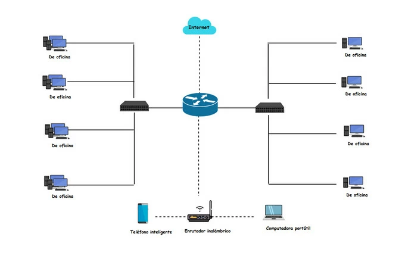
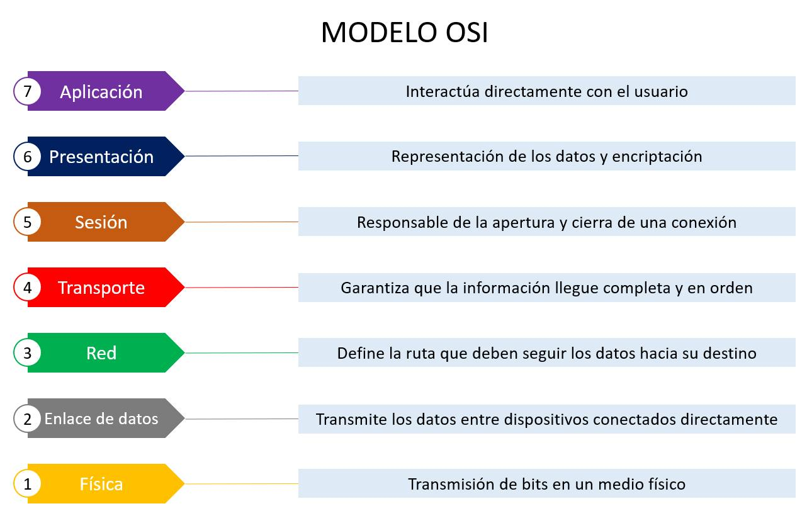
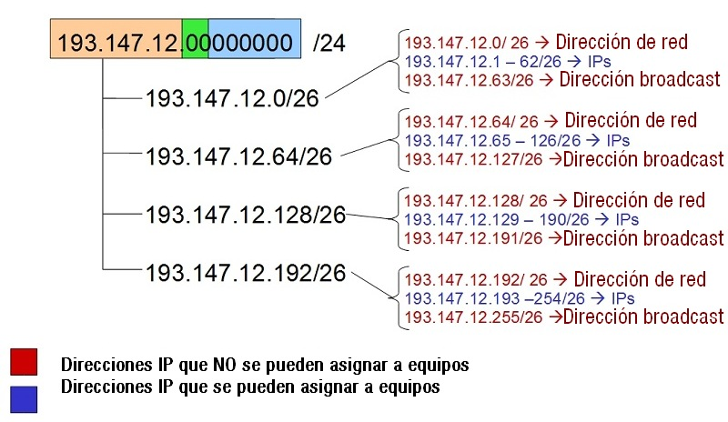
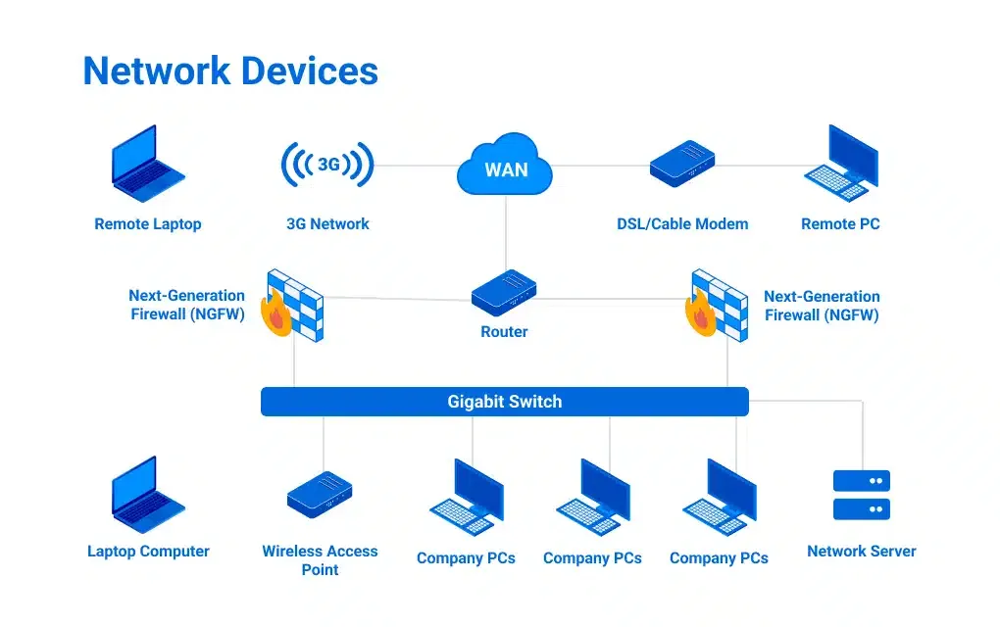
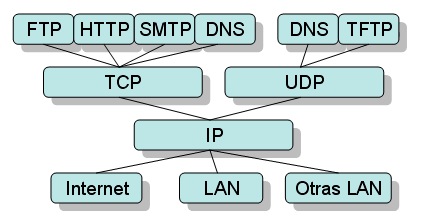

Redes de ordenadores
En esta sección aprenderás los conceptos fundamentales de las redes de ordenadores.
Topologías de Red
Una topología de red describe cómo se conectan física o lógicamente los dispositivos dentro de una red. Define la forma, estructura y el modo en que circulan los datos entre los nodos y existen varios tipos, (véase bus, anillo, malla, estrella...). La más común actualmente es la topología de árbol o estrella ampliada ya que la de malla resulta muy costosa y tanto la de bus como la de anillo están en desuso.

Modelo OSI y TCP/IP
Estos son los modelos que explican como la información navega por internet. Mientras que el modelo OSI es una estructura teórica que describe cómo se comunican los sistemas en una red, no se usa tal cual en la práctica, pero resulta útil para entender y organizar las funciones de red. Lo que se usa en la práctica es el modelo TCP/IP, compuesto por 4 capas en lugar de 7, cada una utilizando sus respectivos protocolos.

Direcciones IP y Subredes
Cómo se asignan direcciones lógicas, máscaras de red y cómo dividir redes. Una dirección IP identifica cada dispositivo de una red y las subredes permiten dividir una red grande en partes más pequeñas tomando bits prestados a la parte del host, mejorando la organización y el rendimiento. Se definen mediante una máscara de red, que indica cuántos bits pertenecen a la parte de red y cuántos a los hosts. Por ejemplo, la máscara 255.255.255.0 es una /24 o clase C y divide una red en grupos de 256 direcciones, donde la primera es la subred y la última el broadcast.

Dispositivos de Red
Switches y routers y su función en la red. Un switch es un dispositivo que conecta varios equipos dentro de la misma red local (LAN) cuya función principal es recibir tramas y enviarlas solo al dispositivo correcto, utilizando la tabla de direcciones MAC y empleando el protocolo ARP cuando se desconoce la dirección MAC correspondiente a una IP.

Protocolos Importantes
- DHCP (puertos 67 y 68)
- DNS (puerto 53)
- HTTP (puerto 80)
- HTTPS (puerto 443 del TCP)
- FTP (puertos 20 y 21)
- SSH (puerto 22)
- Otros protocolos esenciales
